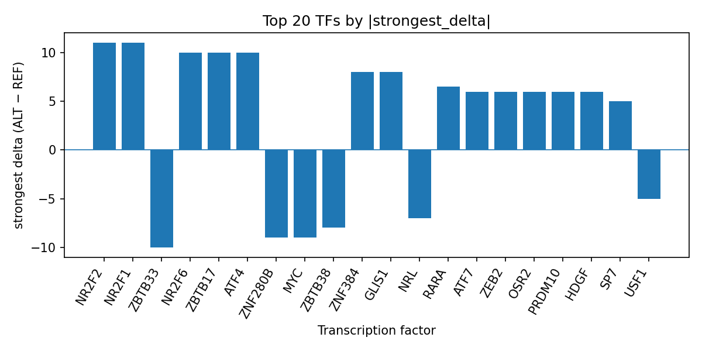

Author: snv-tf-researcher
The intronic and non-coding transcript variant rs72767677 (chr10:12364534 C>G) was prioritized for the age of onset of Parkinson disease on the basis of effect size, with an absolute beta of 5.964 and a reported association p value of 5.0 × 10^-6. AlphaGenome TF ChIP-seq predictions suggested that the ALT allele may alter binding across multiple transcription factors, with the strongest predicted promotion for NR2F2, NR2F1, and NR2F6, and the strongest predicted inhibition for ZBTB33, MYC, POLR2A, and POLR2AphosphoS5. These are computational predictions rather than experimental measurements. The variant is intronic, nearest genes were not provided, and the locus may be in linkage disequilibrium with the true causal variant. PubMed-listed literature on Parkinson disease age at onset and progression supports the relevance of onset heterogeneity and motivates further validation, but experimental follow-up is required to determine whether the predicted TF changes are functional.
Parkinson disease exhibits substantial heterogeneity in onset age and subsequent clinical course, with population-based and cohort studies showing that age at onset and age at diagnosis are associated with downstream outcomes including dementia, mortality, and progression [1-4]. Recent studies also emphasize that Parkinson disease biology can differ by onset subgroup and that genetic and clinical stratification may help refine prognosis [2-4]. In parallel, genome-wide studies and integrative analyses continue to identify loci and molecular features associated with Parkinson disease risk, age at onset, and progression [5-7]. However, statistical association alone does not specify a molecular mechanism.
Non-coding variants may influence disease-relevant regulation by altering transcription factor occupancy or chromatin-associated binding. To explore this possibility for a candidate locus selected by effect size, we applied AlphaGenome TF ChIP-seq prediction to rs72767677. Because AlphaGenome produces computational predictions rather than direct molecular measurements, the resulting TF effects should be interpreted as prioritization signals that require experimental validation.
Figure 1. End-to-end workflow for variant prioritization, annotation, AlphaGenome TF ChIP-seq prediction, transcription factor summarization, literature retrieval, and manuscript synthesis. The pipeline begins with disease and association input, applies effect-size-based variant filtering and consequence annotation, then summarizes predicted TF-level changes for reporting.
The variant rs72767677 on chromosome 10 (C>G; risk allele name rs72767677-T) was selected as the candidate variant for the trait age of onset of Parkinson disease based on the provided effect size (absolute beta 5.964) and association p value (5.0 × 10^-6). The variant was annotated as an intron_variant and non_coding_transcript_variant. No nearest genes were provided.
AlphaGenome TF ChIP-seq predictions were used to infer allele-dependent changes in transcription factor binding across available tracks. These outputs are computational predictions, not experimental measurements. Predicted deltas were summarized at the transcription factor level using the supplied top transcription factor summary table, including number of tracks, strongest track, strongest biosample, strongest delta, mean delta, median delta, and counts of promoted and inhibited tracks. The run-specific reference table top_tf_effects.tsv is the source table for the transcription factor summary used in the Results. PubMed-indexed literature matching the query terms for Parkinson disease and age at onset was retrieved from the provided list and used only for contextual interpretation.
AlphaGenome predictions prioritized several transcription factors with positive predicted binding changes at rs72767677, led by NR2F2, NR2F1, and NR2F6. NR2F2 showed the largest positive shift (strongest delta 11.0; 4/4 tracks promoted), with the strongest track in MCF-7 cells. NR2F1 also showed a uniformly positive pattern across its tracks (strongest delta 11.0; 3/3 promoted), and NR2F6 showed a similarly consistent positive direction (strongest delta 10.0; 3/3 promoted). Additional promoted factors included ZBTB17, ATF4, ZNF384, GLIS1, RARA, ATF7, ZEB2, OSR2, PRDM10, HDGF, TBX21, PKNOX1, CEBPB, SP7, ZNF335, NR2C2, and YY1, indicating a broad set of predicted binding gains at this locus (Figure 2).

Figure 2. Top transcription factors ranked by the strongest signed AlphaGenome-predicted ALT-vs-REF binding delta at rs72767677. Positive bars indicate predicted promotion of TF ChIP-seq signal, while negative bars indicate predicted inhibition; the plotted values summarize the strongest track-level effect for each TF.
Predicted binding inhibition was also observed for multiple factors. ZBTB33 showed mixed but overall inhibitory directionality (strongest delta -10.0; 3/5 tracks inhibited), while MYC and POLR2A were both predicted to have mixed responses with overall inhibitory direction. Additional inhibited factors included ZNF280B, ZBTB38, NRL, USF1, and POLR2AphosphoS5. Among these, POLR2A had the largest number of evaluated tracks (44), with a slight positive mean delta but a negative direction in the summary based on the strongest effect and track distribution, whereas POLR2AphosphoS5 showed a negative strongest delta in spleen. Together, these results suggest that rs72767677 may alter a broad TF binding landscape rather than affecting a single factor.
The locus-level interpretation is consistent with the broader Parkinson disease literature showing that age at onset and progression are clinically and biologically heterogeneous [1-4]. Recent genome-wide and integrative studies have also linked genetic variation to Parkinson disease age at onset and related traits, supporting continued prioritization of variants with potential regulatory impact [5-7]. The present computational results therefore nominate rs72767677 for follow-up testing as a candidate regulatory variant in Parkinson disease onset biology.
This analysis prioritizes rs72767677 as a non-coding locus with predicted regulatory effects on multiple transcription factors, especially members of the NR2F family and selected additional factors such as ZBTB33, MYC, POLR2A, and YY1. The pattern is notable because it spans both promoted and inhibited predicted TF ChIP-seq signals, suggesting that the allele substitution may reshape local regulatory occupancy in a complex manner. However, these are computational AlphaGenome predictions and do not establish that the variant alters binding in vivo.
The Parkinson disease literature provided here supports the relevance of onset-age heterogeneity as a meaningful phenotype. Population and cohort analyses report that age at onset or diagnosis is associated with subsequent dementia and mortality, while other studies identify genetic associations with age at onset and progression [1-7]. In that context, a predicted regulatory variant such as rs72767677 may help prioritize mechanistic follow-up for disease timing, but the present data do not identify a target gene or pathway.
Experimental validation will be required to test whether the predicted TF changes occur in relevant cellular contexts and whether they are associated with downstream expression changes. Orthogonal assays such as reporter experiments, allele-specific binding assays, or genome editing-based perturbation studies were not performed here and are necessary to assess function.
This study is limited to a single candidate variant that was selected by effect size. The variant may therefore be in linkage disequilibrium with the true causal variant rather than being causal itself. The AlphaGenome outputs are computational predictions of TF ChIP-seq signal changes, not direct biochemical measurements, and they require experimental validation. No nearest genes were provided for rs72767677, limiting biological interpretation at the gene level. The literature list provided here was used only for contextual discussion, and the included studies do not establish a mechanism for this locus in Parkinson disease onset.
Dookhy J, Cummings M, Price E, Liu Y, Gutierrez-Gomez S, O'Shea S, et al. Dementia Incidence in Individuals With Parkinson's Disease in the Framingham Heart Study. Ann Clin Transl Neurol. 2026. PMID: 41944089. doi:10.1002/acn3.70383
Macleod AD, McLernon DJ, Camacho M, Williams-Gray CH, Lawson RA, Yarnall AJ, et al. Prognosis in Parkinson's Disease: An Individual Patient Data Meta-Analysis of Six European Incidence Cohorts. Mov Disord. 2026. PMID: 41964342. doi:10.1002/mds.70303
Cao F, McAloney K, Ogonowski NS, García-Marín LM, Díaz-Torres S, Flores-Ocampo V, et al. Insights from a cross-sectional population-based study of 10,929 Australians living with Parkinson's disease: risk factors, comorbidities, and sex differences. Lancet Reg Health West Pac. 2026;68:101816. PMID: 41970459. doi:10.1016/j.lanwpc.2026.101816
Yoon B, Kim HJ. Mortality risk associated with acetylcholinesterase inhibitor use in Parkinson's disease dementia according to sex and age at disease onset: a nationwide cohort study. Epidemiol Health. 2026;e2026015. PMID: 41986935. doi:10.4178/epih.e2026015
Zhou H, Wang Z, Tan Z, Deng B, Yang W, Huang Z, et al. Identification of circulatory neuro-related proteins in Parkinson's disease: an integrated genetic-proteomic-clinical study. EBioMedicine. 2026;125:106183. PMID: 41724112. doi:10.1016/j.ebiom.2026.106183
Dering R, Onvumere M, Liu L, Huot P, Gan-Or Z, Senkevich K. Investigating the Genetic Relationship Between Vitamin B12 Metabolism and Parkinson Disease. Neurology Genet. 2026;12(2):e200350. PMID: 41710648. doi:10.1212/NXG.0000000000200350
Landoulsi Z, Sreelatha AAK, Kuznetsov N, Schulte C, Bobbili DR, Montanucci L, et al. Genome-wide association study of copy number variations in Parkinson's disease. NPJ Parkinsons Dis. 2026. PMID: 42009659. doi:10.1038/s41531-025-01245-z